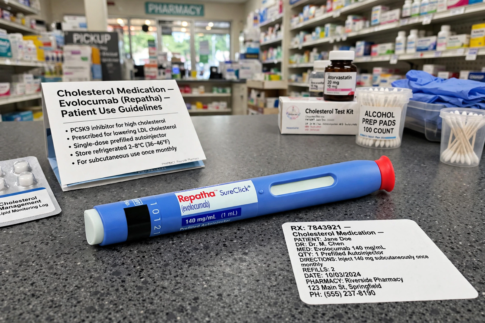

Alirocumab
Alirocumab, sold under the brand name Praluent, is a monoclonal antibody medication used to reduce LDL cholesterol in adults with primary hypercholesterolemia or established cardiovascular disease. It is a PCSK9 inhibitor, administered by subcutaneous injection, typically once every two weeks with a pre-filled autoinjector pen.

| Type | Monoclonal antibody (fully human IgG1) |
|---|---|
| Target | PCSK9 |
| Trade names | Praluent |
| Routes | Subcutaneous injection |
| Legal status | Prescription only (US, EU) |
| Developers | Sanofi and Regeneron Pharmaceuticals |
Mechanism of action
PCSK9 binds LDL receptors on hepatocytes and targets them for degradation. By binding PCSK9, alirocumab prevents receptor breakdown, increasing the number of LDL receptors available to clear LDL cholesterol from the blood. Treatment typically lowers LDL cholesterol by around 60% on top of statin therapy.
Clinical use
Alirocumab was approved by the US Food and Drug Administration in July 2015 and by the European Medicines Agency the same year, initially for heterozygous familial hypercholesterolemia and clinical atherosclerotic cardiovascular disease. The ODYSSEY OUTCOMES trial, involving nearly 19,000 patients after acute coronary syndrome, showed reduced major adverse cardiovascular events versus placebo.
Adverse effects
Common side effects include injection-site reactions, nasopharyngitis, and influenza-like symptoms. Because it is a protein, it is not associated with the muscle toxicity seen with some oral agents.
See also
Autoinjector · Evolocumab · PCSK9 · Statin